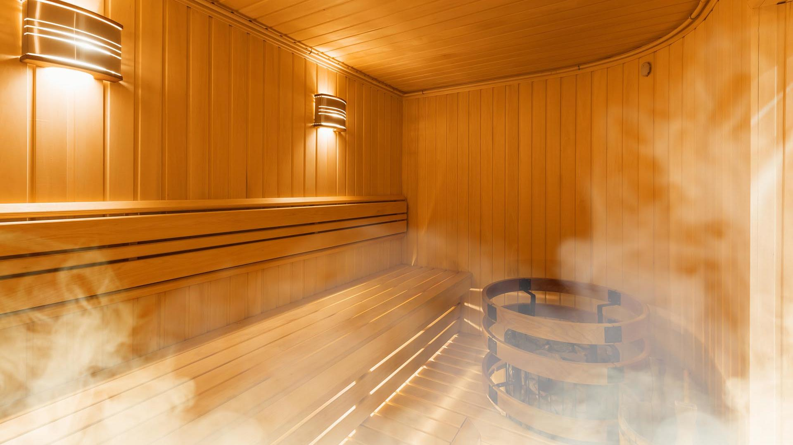

Our RYAN Sport Club experts can help you discover new training techniques and exercises
that offer a dynamic and efficient full-body workout.
A sauna or sudatory, is a small room or building designed as a place to experience dry or wet heat sessions, or an establishment with one or more of these facilities. The steam and high heat make the bathers perspire. A thermometer in a sauna is typically used to measure temperature; a hygrometer can be used to measure levels of humidity or steam. Infrared therapy is often referred to as a type of sauna, but according to the Finnish sauna organizations, infrared is not a sauna.

The Purification Rundown, also known as the Purif or the Hubbard Method, is a
detoxification program which involves heat exposure for up to 5 hours a day and can
exceed 4 weeks in length. It was developed by Scientology's founder L. Ron Hubbard and
used by the Church of Scientology as an introductory service. Scientologists consider it
the only effective way to deal with the long-term effects of drug abuse or toxic
exposure. It forms the basis for drug rehabilitation and detoxification programs
operated by church-affiliated groups such as Narconon,Criminon, •Second Chance, and the
International Academy of Detoxification Specialists.The program combines exercise,
dietary supplements and long stays in a sauna (up to five hours a day for five weeks).It
is promoted variously as religious or secular, medical or purely spiritual, depending on
context.
The Purification Rundown usually takes several weeks. As well as spending time in
saunas, people are required to do light exercise including calisthenics, treadmills, and
other similar activities.
The program consists of a course of doses of vitamins (niacin in particular), long
periods in a sauna, exercise, and consumption of a blend of vegetable oils, in the
belief that the subject will sweat out the toxins and replace the oils in the body's
fatty tissues with the vegetable oil. Clear Body, Clear Mind recommends that
participants maintain their normal diet throughout the procedure, supplemented with
fresh vegetables.
The program requires its participants to ingest the following at regular intervals:
• A multi-vitamin cocktail, the main ingredient of which is niacin. Clear Body, Clear
Mind
recommends initial doses of 100 mg, increasing to 5,000 mg over the course of the
program.This contrasts with the medically recommended level of about 15 mg: larger doses
can have severe, even potentially fatal side effects.The participant is told to expect
toxic symptoms due to the release of poisons or radiation from their body fat.
• Mineral supplements, including calcium, magnesium, iron, zinc, manganese, copper,
iodine
and potassium.
• Up to half a cupful of pure oils per day.
• "CalMag", a drink which Clear Body, Clear Mind describes as a solution of calcium
gluconate, magnesium carbonate and vinegar in water, in such proportions that the mix
has twice as much elemental calcium as magnesium.This is taken up to three times per
day.
• Enough liquids to replace the fluids lost in the sauna.
Hubbard specified that each participant must complete a daily report form, listing the
amounts of vitamins, minerals, Cal-Mag and other fluids taken, which is reviewed to make
sure they are complying with every aspect of the program.
Clear Body, Clear Mind contains a disclaimer which states that the program is not a
medical treatment.A similar disclaimer appears in the Hubbard Communication Office
Bulletins, noting that the treatment is not a medical process but a purely spiritual
activity.Hubbard recommends that the participant should sign a waiver noting that the
program is not medical treatment.
Promotion
The Purification Rundown is promoted as having physical and mental benefits such as
lowering cholesterol, relieving pain, and improving memory. Scientology's promotional
materials claim it can boost IQ by up to 15 points. Scientologists are strongly
encouraged to take part in the program as a necessary step in their spiritual
progress.[Scientology promotes the Rundown to the public as a detoxification program,
while it also works with non-religious Scientology-affiliated groups such as Narconon to
offer this program as a treatment for addiction and high levels of stress. Conditions
that are claimed by Scientologists to respond to the program include cancer, AIDS, heart
problems, kidney failure, liver disease and obesity.
In a January 1980 announcement, Hubbard told his followers that a nuclear war was an
imminent threat and that the Rundown would enable them to deal with heavy fallout.He
warned that those who completed the program would stand better chances of survival.
In California, two organizations have been set up by Scientologists to try to give
scientific legitimacy to the program. These were the Foundation for Advancements in
Science and Education and the HealthMed Clinic.
The Rundown, as delivered by HealthMed, is heavily promoted in the book Diet for a
Poisoned Planet by journalist David Steinman, who denies any connection with the Church
of Scientology. The book was the subject of a paper from the U.S. Food and Drug
Administration which accused Steinman of distorting facts. C. Everett Koop, the former
Surgeon General of the United States, also criticized the book, recommending that the
public stay away from Hubbard's "detoxification" procedure.
New student special! $30 unlimited Gym for the first week anh 50% of our member!